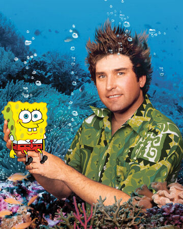
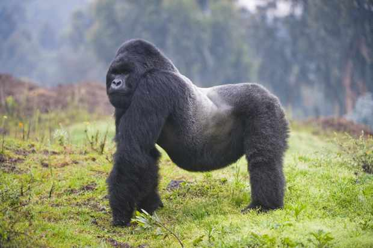

If I could visit anywhere in the world where in the hecking heck would it be? I think I'd visit Tokyo seeing as they have a very unique and interesting culture there.
A person I admire is Stephen Hillenburg. He was the creator of Spongebob Squarepants, and not only did he dedicate his life to entertaining children, but also to preserving marine biology.
My favorite animal is a silverback gorilla.
Here is a link to another one of my favorite animals.